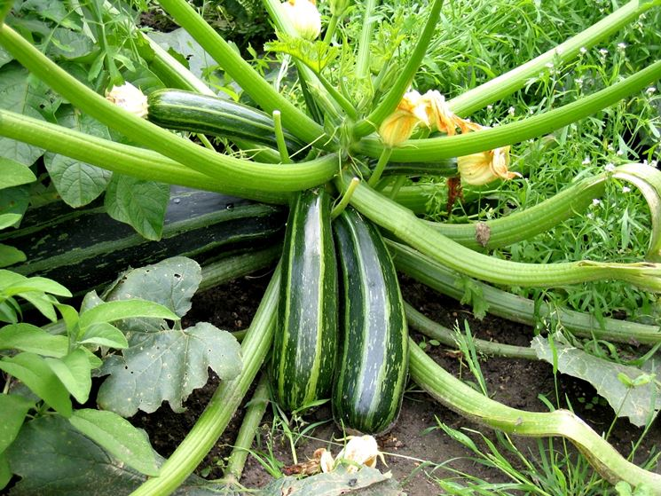

Zucchine
Coltivare in terreno molto ricco di materia organica e non coltivare dopo Solanacee o piante della stessa famiglia delle cucurbitacee.
- Varietà: Zucchina chiara di Faenza
- Periodo di Semina: Marzo/Aprile
- Primo raccolto: Fine Aprile
- Ultimo raccolto: Fine Luglio
- Raccolto
Dimensione Quantità Piccole (10cm) 16 Medie (11-16cm) 26 Grandi(>16cm) 9 51